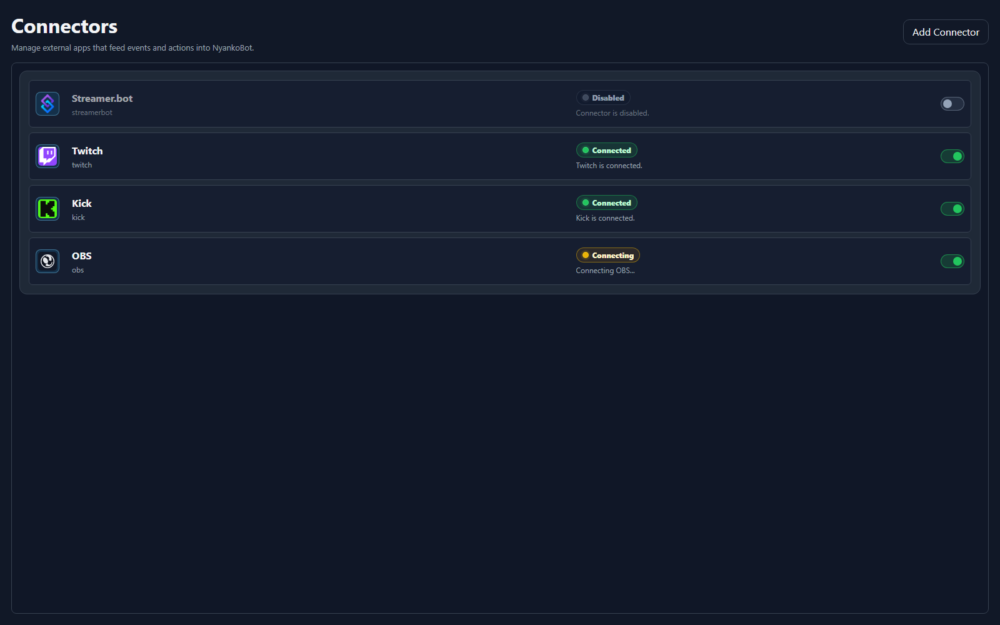

Fast Path
Quick Setup
Use this page when NyankoBot is installed and you want the shortest path to a working OBS overlay with multiple trigger-driven boxes.
1. Connect A Platform

Connect at least one platform first so NyankoBot can receive chat, reward, command, or raw connector events before you bind triggers to boxes.
- Open NyankoBot Setup Home and choose
Connectors. - Add or select the connector you want to use: Twitch, Kick, Streamer.bot, or OBS.
- Enable the connector and complete any required WebSocket or account settings.
- For Streamer.bot, enable the Streamer.bot WebSocket server and use a URL such as
ws://127.0.0.1:8080/. - Use the setup header connector status to confirm the connector is online.
- Open Command Triggers when you need NyankoBot-owned triggers, cooldowns, channel reward handling, or action flows.
For the current connector overview, see Connectors. For Streamer.bot-specific notes, see Streamer.bot Connector.
2. Create Overlay

Create one overlay for the OBS scene. OBS should load that one overlay as a full-scene browser source, then NyankoBot boxes decide what appears inside it.
- Select an existing overlay or click
New overlay. - Name the overlay after the stream scene or layout it belongs to.
- Click
Saveso NyankoBot can create the overlay viewer URL. - Use
Set Defaultwhen this overlay should be the default viewer selection. - Use
Copy OBS URLafter saving to copy the browser-source URL. - In OBS, add a
Browser Sourceto the scene that should show NyankoBot effects. - Paste the copied URL into the OBS browser source URL field.
- Set the browser source size to your canvas size, usually
1920x1080or whatever your stream canvas uses. - Place the browser source above the scene content that the overlay should appear over.
For the deeper explanation of overlays, boxes, sources, triggers, and OBS viewer behavior, see Overlay Setup.
3. Add A Text Box

Add a text box first to prove that trigger tokens can render live data inside the overlay. Use the box's Binding editor to attach an item and a trigger.
- Click
Add boxand position the box where the text should appear on stream. - Open the binding, add a text item, and enter its content.
- Use text such as
{{text}}when the box should show trigger-provided message text. - In the binding's Triggers section, add a chat-message or command trigger.
- Save the overlay and fire the trigger from chat or Streamer.bot.
4. Add A Media Source Box

Add a second box for a meme, image, GIF, video, or sound cue. Add a media item in its binding from an upload, saved source, URL, or configured KLIPY library.
- Click
Add boxagain and position it where the media should appear on stream. - Add a media item to its binding.
- Choose an uploaded file, a managed source, or a reachable media URL.
- Set the media behavior, such as whether it should play once, loop, or hide after playback.
- In the binding's Triggers section, add a command trigger such as
!memeor!hype. - Save the overlay and run the command from chat or Streamer.bot.
- If the media appears in the setup preview but not OBS, refresh the OBS browser source or reopen the overlay viewer URL.
What This Builds
Quick Setup is not a separate feature from the other landing pages. It is a guided path through the first useful setup.
ConnectorThe connection created in step 1 is managed on Connectors, with Streamer.bot-specific details on Streamer.bot Connector.One OBS overlayThe overlay created in step 2 is explained on Overlay Setup and the Overlay component page.Text boxThe text example uses the Box, Binding Editor, and source controls.Media boxThe media example uses the same overlay, proving that OBS only needs one NyankoBot browser source for multiple effects.